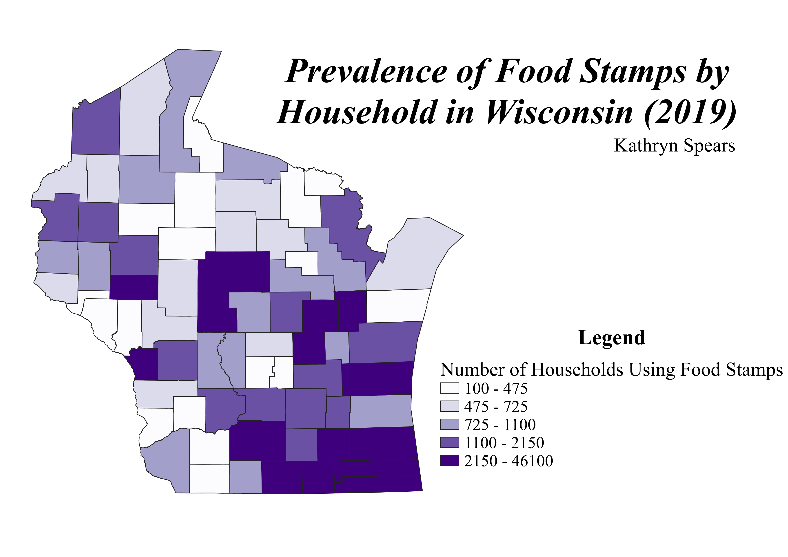
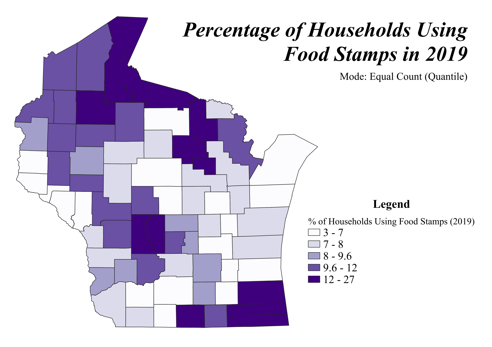
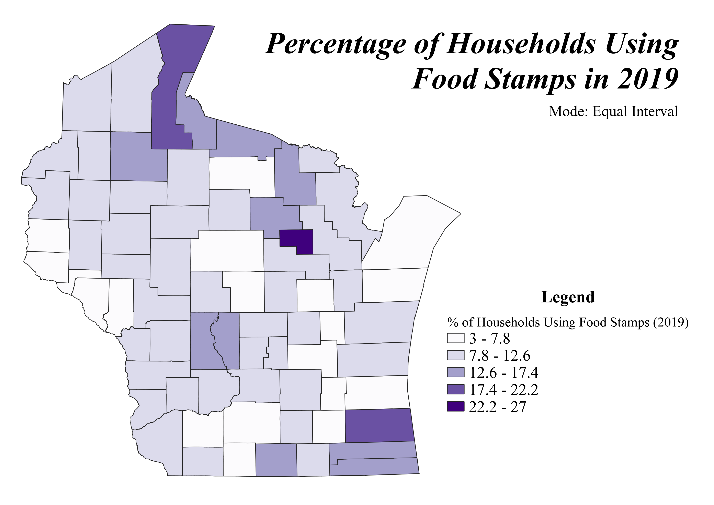

Homework 6 Pt2: Ratio Choropleth
A note before we begin...
While attempting to complete the ratio for my choropleth I realized that I used the wrong data from the CSV that I downloaded from census.data.gov. In my original choropleth I used the total number of households in each Wisconsin county in place of the number of households that used food stamps in 2019, resulting in my numbers being much larger than they should have been. After trying to rationalize it against population data for each county, I realized my error when the counties were reporting that 70-80% of the households were using food stamps, which is incorrect (the actual figure is closer to ~15% for the entire state of WI). Long story short, I went back and fixed my original choropleth to show the number of households that used food stamps in 2019 so I could complete the second part of this assignment correctly. That corrected choropleth is located below.

Projection: NAD83(NSRS2007) / Wisconsin Transverse Mercator (EPSG: 3701)
Ratio Choropleths
I used a percentage to display the data in my chorophleth because it was the most concise way to display the ratio of data that I had. Since my ratio of # of households using food stamps to # of total houses per county is relatively low (most are between a 1:10 and 1:15 ratio), it didn't really make sense to display my data as a number per thousand, ten thousand, etc. because the numbers would be so small it wouldn't really be comprehensible. By displaying my data as percentages instead, I was able to make the ratios larger (whole) numbers that were a little easier to understand. The ratio/calculation for my data is as follows:
(# of households per county using food stamps / total # of households per county) * 100 = % of households using food stamps per county
Mode 1: Equal Count (Quantile)

The equal county (quantitle) classification is the mode that displays my data well because it pretty evenly distributes Wisconsin's 72 counties across the scale, so there isn't one range that has significantly more data in it than another. This makes the map more visually appealing to read/look at because you can tell the range of food stamp usage (from 3 to 27%) without the map being overpowered by one shade/color. Equal count (quantile) does automatically break the ranges using decimals (ex: 9.6%) which isn't ideal, but this can be easily fixed if the mapmaker is looking for clean breaks in the ranges/categories. I chose to leave the decimals included because I wanted to show how the mode classified the ranges naturally (I did the same for the other modes as well). The other downside to this mode is that it tends to clump together the outying data (either the counties with really low or really high food stamp usage) so there can be a bit of a skew on either end of the range, resulting in more lightest shades and darkest shades of purple when compared to the other modes.
Mode 2: Equal Interval

The equal interval classification separates the data into five intervals of equal range so the top of the range is 4.8 households more than the bottom of the interval's range (in this instance). The size of the range varies by dataset and the number of intervals the dataset has. The more intervals, the smaller the ranges are going to be in each interval. While this is a nice idea in theory and looks nice in a legend, in practice it only works on datasets that don't have any outliers (such as the 27% in my data set). When a dataset has a significant outlier, it forces the other intervals to have larger ranges (and thus include more data points), making the choropleth appear to be predominantly one color (the light purple associated with the 7.8-12.6% range in my case).
Mode 3: Natural Breaks (Jenks)

Of the three classifications I tested for this assignment, the natural breaks (jenks) mode was probably the best fit for my dataset because it combines the equal count and equal interval modes to produce a classification that varies the range based on the number of data points that fall within it. The natural breaks mode works to keep clean intervals (without decimals I might add!) while still ensuring that the choropleth is skewed towards one side of the dataset. This is the mode versatile mode that can work with most datasets, including mine because it shows the middle of the dataset well, which is where most of the data in a dataset should fall. The only downside I would say this mode has is that it makes the highest range (the darkest purple) quite large (16-27%), but only 3 of Wisconsin's 72 counties fall within that range so it doesn't clutter the map.